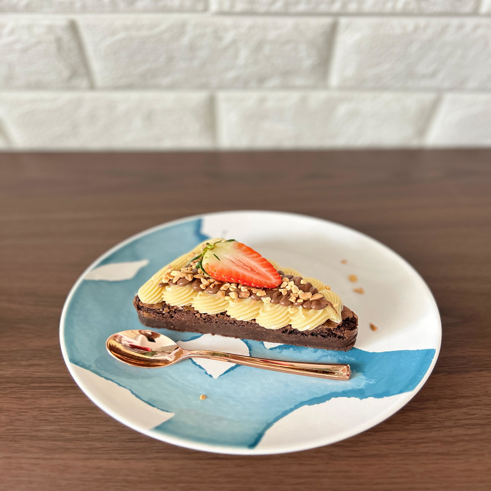
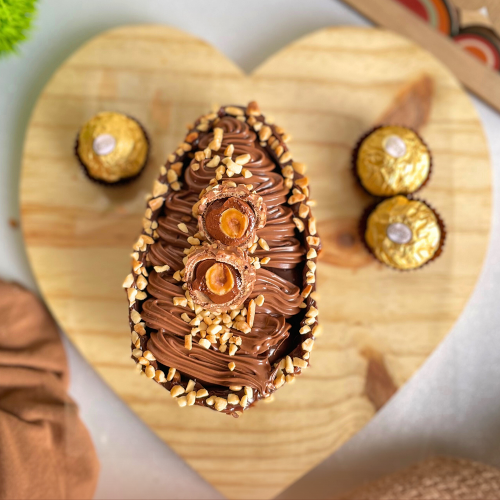

Sobre Nós
Somos a Brownie no Palito, uma empresa que nasceu da vontade de oferecer produtos de qualidade à região do bairro Benfica. Nosso carro-chefe é o brownie — a tradicional delícia norte-americana — que adaptamos com um toque especial e muito cuidado em cada detalhe. Um dos nossos principais compromissos vai além do sabor e da apresentação: valorizamos a qualidade desde a escolha dos ingredientes até o produto final. Acreditamos que cada etapa do processo faz diferença e isso se reflete em cada mordida.

Nossos Produtos
São produtos que levam ingredientes de qualidade, pois pensamos em levar o que há de melhor para os nossos clientes. Trabalhamos com brownies em diversos sabores, como o tradicional chocolate, ninho, ninho com Nutella, entre outros. Além disso, oferecemos opções de ovos de Páscoa recheados com nossos deliciosos brownies, proporcionando uma experiência única e saborosa para essa época especial do ano. Venha conhecer nossos produtos e se deliciar com o sabor irresistível dos nossos brownies e ovos de Páscoa!

Missão
Levar produtos de qualidade, com experiência agradável de sabor ao paladar dos amantes de doces. Priorizar a gestão de qualidade desde a compra dos insumos, até chegar no consumidor final.
Visão
Tornarmos referência na venda de sobremesas, em especial o brownie, na região em que nós atuamos. Espera-se conquistar o gosto popular dos consumidores do bairro Benfica, bem como realizar parcerias com outras empresas (manter a melhor relação B2B).
Valores
Qualidade, Sabor, Inovação, Atendimento ao Cliente, Sustentabilidade e Paixão pelo que fazemos.